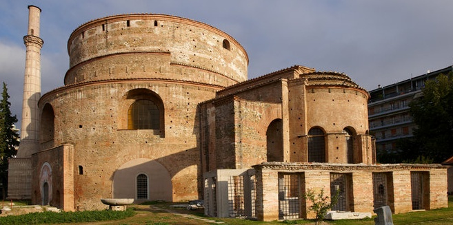
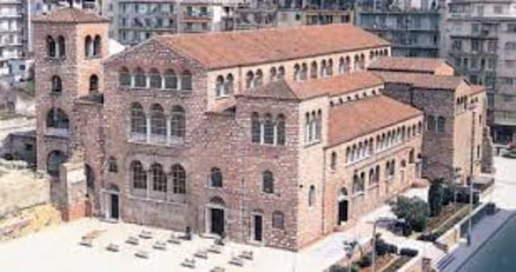
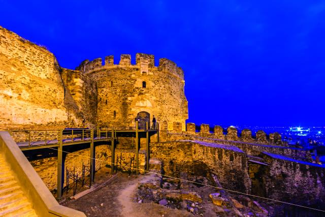

Ροτόντα. Κυκλικός ναός. H Ροτόντα είναι θολωτό στρογγυλό κτίσμα του 4ου αιώνα στη Θεσσαλονίκη, όμοιο με το Πάνθεον της Ρώμης, και προοριζόταν για ναός του Διός. Λόγω της μη χρήσης του, μετατράπηκε επί βυζαντίου σε χριστιανικό ναό των Ασωμάτων Δυνάμεων και μετά την Απελευθέρωση της Θεσσαλονίκης, το 1912, αφιερώθηκε στον Άγιο Γεώργιο. Συμπεριλαμβάνεται στα Παλαιοχριστιανικά και Βυζαντινά μνημεία της Θεσσαλονίκης ως Μνημείο Παγκόσμιας Κληρονομιάς της UNESCO.
Αγ. Δημήτριος. Προστάτης της πόλης. Ο Ναός του Αγίου Δημητρίου βρίσκεται στη Θεσσαλονίκη και είναι αφιερωμένος στον Άγιο Δημήτριο, τον πολιούχο της πόλης. Βρίσκεται στην ομώνυμη οδό και είναι πεντάκλιτη βασιλική του «ελληνιστικού τύπου», αλλά με πολλά ιδιαίτερα και σπάνια χαρακτηριστικά σε σχέση με άλλους ναούς της ίδιας περιόδου στην Ελλάδα. Διαθέτει εγκάρσιο κλίτος και πλούσιο ζωγραφικό και μαρμάρινο διάκοσμο με περίτεχνα κιονόκρανα. Στο υπόγειο του ναού βρίσκεται ο χώρος μαρτυρίου του Αγίου. Από τα ψηφιδωτά του, ξεχωρίζει αυτό που απεικονίζει τον ίδιο τον Άγιο με δύο μικρά παιδιά και ένα άλλο, που απεικονίζει τον Άγιο ανάμεσα στον επίσκοπο και στον έπαρχο, οι οποίοι ανακαίνισαν το ναό τον 7ο αι.
Κάστρα Θεσσαλονίκης. Δίδυμος πύργος με τον Λευκό Πύργο που συνδεόταν με τείχος. Η περιοχή που εκτείνεται γύρω από τα Κάστρα της Θεσσαλονίκης μας μεταφέρει σε μια πόλη διαφορετική, ένα γοητευτικό μωσαϊκό ιστορίας και παράδοσης φτιαγμένο από πέτρα, με πλακόστρωτα δρομάκια, ανθισμένες αυλές, σκαλάκια και γραφικά σοκάκια. Ανηφορίζοντας τα στενά σοκάκια της Άνω Πόλης, η όλη αίσθηση που δημιουργείται είναι μοναδική.